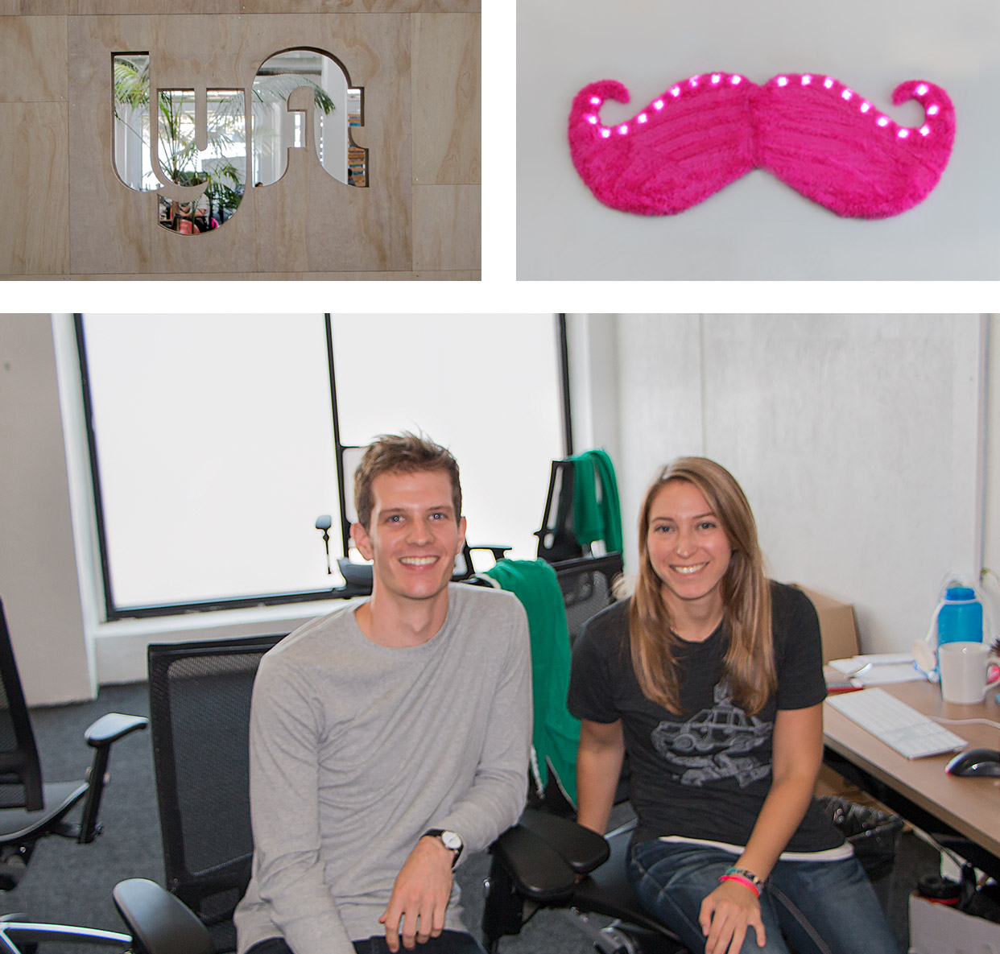

Lyft Uses Twitter to Bring Car Sharing to the Masses
As ride-sharing service Lyft has grown to 16 cities with one main office in SF – they have perfected how to scale with grace. From coast to coast, they’ve given thousands of customers millions of rides. The Lyft service is contagious, so it’s only natural they turn to social media to support customers and ultimately help expand their service to new cities.
"Since we maintain a unified presence on Twitter, people can share and see stories between all different cities in one place,” explains Zach Cole, Community Manager at Lyft. “They feel like a part of the larger Lyft community, of the broader ridesharing movement, which would be difficult to achieve if each city were segmented. We love when meaningful stories can be traded between markets."
With incoming tweet volumes in September of 2013 close to 6000, the @lyft team not only needs to be efficient and grow the Lyft community – in the real world and over social media – but also needs to assist customers in a timely manner.
That’s where Sparkcentral comes in. Zach and his team at Lyft regularly respond to thousands of tweets a month with 72% of tweets being answered in under 30 minutes.
And with Sparkcentral by their side, the Lyft community team can help serve new cities with aplomb. “We’ll have a bunch of people tweeting for months before we launch in their city and we can tag those tweets with that location. When it finally comes time to enter that city, we can go back into Sparkcentral and dig up that city tag and reach out with great anticipation and rile them up again for the launch” says Zach.
As Lyft grows into more markets, their world class community management will be there to support new cities, drivers and customers. Keep your eyes peeled for a Lyft coming to a city near you soon!